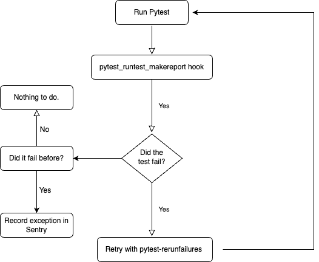
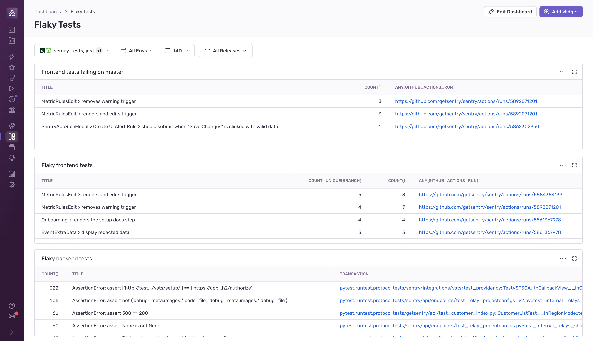

A Deep Dive into Eliminating Flaky Tests
Good afternoon everyone. Today, we're diving into a crucial topic that often goes unnoticed but
significantly impacts our development workflow - flaky tests. Tests are the backbone of our development process,
ensuring our software works as expected. But what happens when these tests aren't reliable? Today I will be
discussing how to find your flaky tests and how we can eliminate them.
whoami
- Nisanthan Nanthakumar
- Senior Software Engineer @ Sentry.io
- Summited Mt Fuji
- Hiked through the Amazon jungle
- Camped in the Sahara desert
What is a flaky test?
A test that could return different results (pass or fail) on different runs, without any changes to the code.
- Asynchronous code
- Race conditions
- Environmental factors
What causes this unpredictability?
- Asynchronous code can sometimes execute in unexpected sequences.
- Race conditions, where the output depends on the timing of uncontrollable events.
- And environmental factors, like differences between local machines and CI servers.
Inconsistent results erode trust in a testing system
The saying 'Inconsistent results erode trust in a testing system' encapsulates our challenge. Without
reliable tests, our faith in the entire testing process goes down. The danger isn't in false positives but
also in the time wasted chasing down these false alarms.
Automated flaky test detection
So my goal is to automate the flaky test detection
The Approach:
- Auto-retry failing tests
- Report potential flakiness to Sentry

- Automatically retry failing tests.
- If they pass on retry, it hints at potential flakiness. We then report these to Sentry.
Quick code prototype
import sentry_sdk
sentry_sdk.init(
dsn="your-dsn",
traces_sample_rate=1.0,
)
def pytest_runtest_makereport(item, call):
# execute all other hooks
# to obtain the report object
report = yield
outcome = report.get_result().outcome
def pytest_runtest_makereport(item, call):
...
# avoid skipped calls
if call.when == "call" and outcome != "skipped":
cur_exc_chain = getattr(item,
"pytest_sentry_exc_chain", [])
# failed and we store the failure.
if call.excinfo is not None:
item.pytest_sentry_exc_chain = cur_exc_chain = cur_exc_chain + [
call.excinfo
]
# tests passed, we record the previously failed tests
if (cur_exc_chain and call.excinfo is None)
for exc_info in cur_exc_chain:
sentry_sdk.capture_exception(
(exc_info.type, exc_info.value, exc_info.tb)
)
Put together
def pytest_runtest_makereport(item, call):
# execute all other hooks to obtain the report object
report = yield
outcome = report.get_result().outcome
# avoid skipped calls
if call.when == "call" and outcome != "skipped":
cur_exc_chain = getattr(item, "pytest_sentry_exc_chain", [])
# failed and we store the failure.
if call.excinfo is not None:
item.pytest_sentry_exc_chain = cur_exc_chain = cur_exc_chain + [
call.excinfo
]
# tests passed, we record the previously failed tests
if (cur_exc_chain and call.excinfo is None)
for exc_info in cur_exc_chain:
sentry_sdk.capture_exception((exc_info.type, exc_info.value, exc_info.tb))
We already built pytest-sentry
Query for flaky tests

Best Practices:
Evaluate test value
When encountering a flaky test, our first instinct might be to fix it immediately. However, pause and ask: 'How
critical is this test?' A test for a core feature is worth the effort to stabilize. But if it's a legacy feature
rarely used or an edge case, the ROI (Return On Investment) on fixing the test might not justify the effort.
Sometimes, the best decision might be to modify, skip, or even delete the test.
Isolate tests with:
-
pytest.fixture for test setup & teardown
- Mock external services and dependencies
Tests should live in their own bubble, untouched by external states or other tests.
pytest.fixture provides this by setting up prerequisites and cleaning up after tests. For instance, if testing a
database feature, a fixture could create a fresh DB instance and tear it down post-test. Also, consider mocking
external services and dependencies. This way, your tests aren't relying on an
external system's state or availability, eliminating an entire category of flakiness."
Keep Tests Small and Specific
Your tests should be laser-focused on individual functionalities. If you find yourself writing a test that's
checking multiple functionalities, it's a cue to split it. Ensure each test has a singular, well-defined purpose.
Also, maintain distinctiveness between test cases to avoid redundant checks.
Monkeypatch times and dates
Timing can be a flakiness culprit, especially in integration tests. Instead of arbitrary waits, monkeypatch
to to generate timestamps or datetimes that emulate a certain condition
Consistent Environments
Differences between local and CI/CD environments are classic sources of flakiness. Strive for parity between
them. Tools like Docker can help with this. When your tests require external interactions, think
of ways to minimize variability. This could be achieved by local stubs or using fixtures to simulate external
calls.
Monitoring and Assurance
Identification and best practices are just the start. Monitoring is our safety net. With Sentry's dashboard,
we not only keep an eye on application issues but also on any lingering or emerging flaky tests. It's an ongoing
process, ensuring our codebase remains trustworthy.
Q&A
In conclusion, flaky tests challenge our trust in the entire testing framework. But with careful
identification, best practices, and continuous monitoring, we can restore that trust. I'll leave you with a
thought: 'Flaky tests are not just code issues; they're trust issues.' With that, I'm open to any questions you
might have.